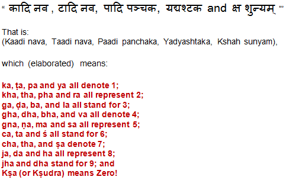

"The Vedic Numerical Code, as elucidated by Bharati Krsna in Chapter XXV of his book, presents a unique method of representing numbers through the Sanskrit (Devanagari) alphabet. Unlike conventional numerical notations with figures, the ancient Sanskrit writers utilized letters to denote various numbers in their mathematical writings. Bharati Krsna emphasizes that this unconventional approach was not employed to obscure knowledge but rather to enhance the clarity and simplicity of recording arguments, derivations, and conclusions.
THE KEY TO THE CODE
The distinctive feature of this numerical code lies in its adherence to the natural order of the Sanskrit alphabet, allowing for immediate interpretation without the need for intricate deciphering. This intentional transparency suggests that the code was designed for the facilitation of verification processes rather than for the concealment of information. The key to unlocking this code is elegantly simple:

Each consonant in the Sanskrit alphabet corresponds to a specific numerical value based on its natural order.
Vowels, not included in the numerical list, do not contribute to the numerical representation.
In the case of conjunct consonants, only the value of the last consonant is considered.
For instance, to represent the number 11 using this code, multiple options are available, such as "papa," "tata," or "tapi.".
This versatility in expression showcases the flexibility of the Vedic Numerical Code in translating numbers into Sanskrit text and vice versa. The profound historical significance of this numerical notation method lies not only in its cultural context but also in its practical utility for conveying mathematical concepts with clarity and efficiency.